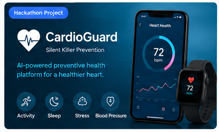
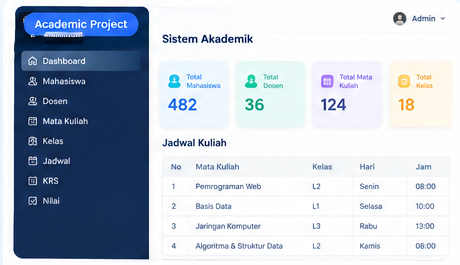
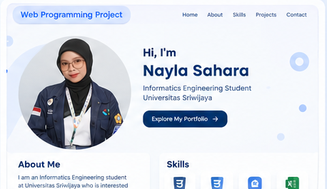

Hackathon Project
CardioGuard
AI-powered preventive health platform untuk membantu pengguna memantau dan memahami risiko kesehatan jantung.
05 / PROJECTS
Tiga project berikut ditampilkan sebagai card sederhana. Visual project menggunakan tampilan referensi yang sudah dibuat sebelumnya agar isi portfolio tetap sesuai dengan project yang saya kerjakan.

AI-powered preventive health platform untuk membantu pengguna memantau dan memahami risiko kesehatan jantung.

Perancangan sistem akademik untuk mengelola mahasiswa, dosen, mata kuliah, kelas, jadwal, KRS, dan nilai.

Website portfolio pribadi yang menampilkan profil, pendidikan, pengalaman, skills, project, dan informasi singkat menggunakan HTML dan CSS.